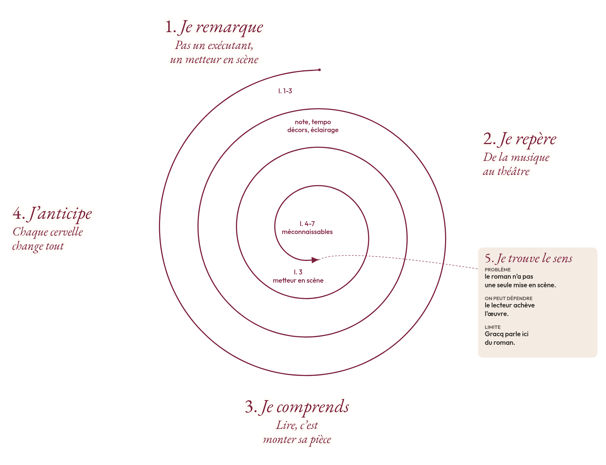
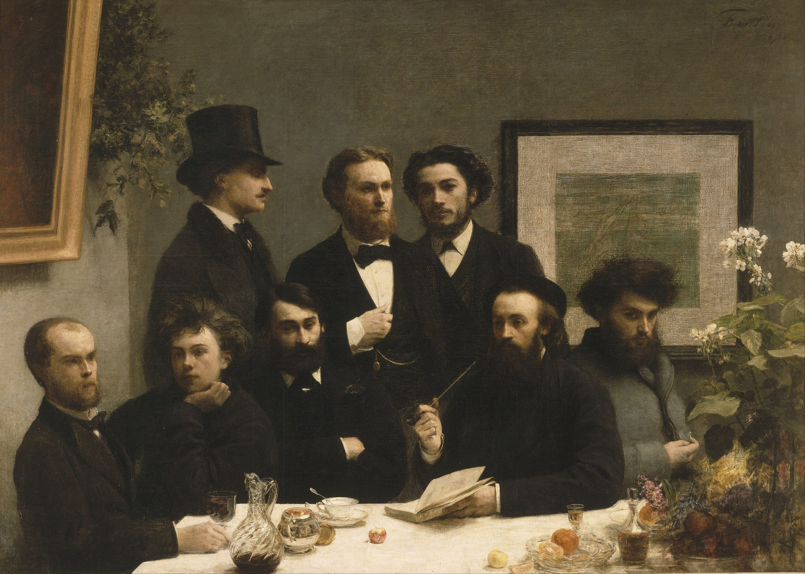
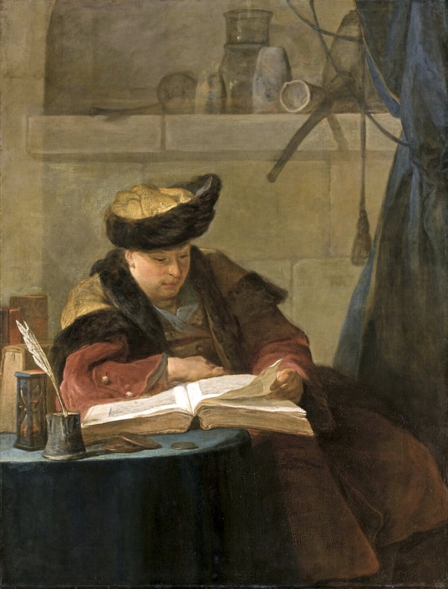
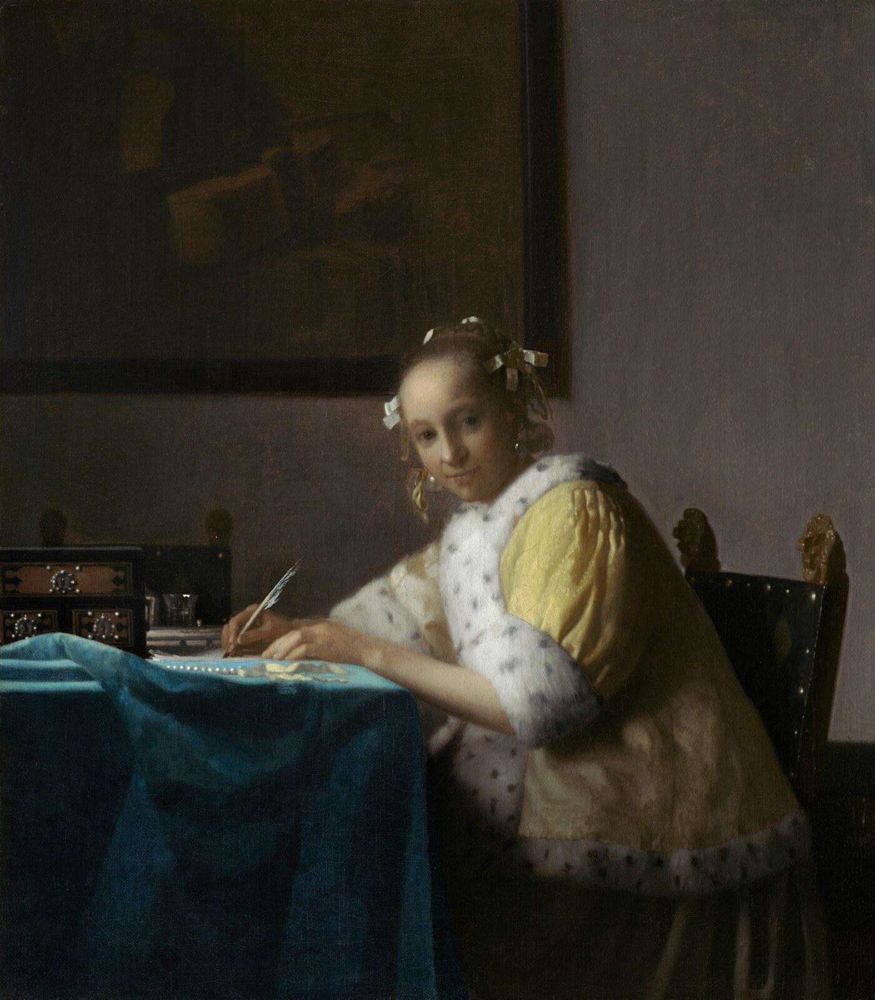
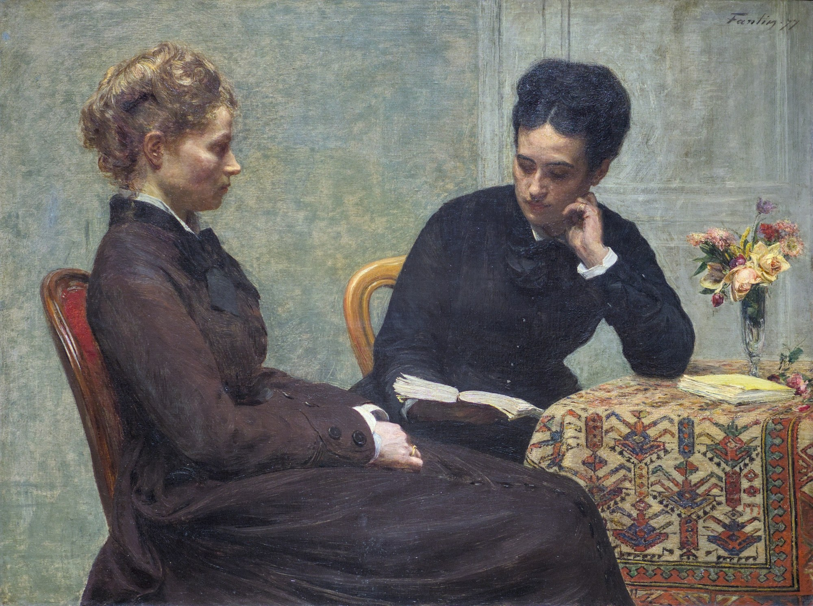

Première générale · Français · Lycée général et technologique
En lisant en écrivant
Julien Gracq, lecture, écriture et littérature d'idées. Douze séances, la spirale de Gorse, le lecteur metteur en scène, la chaîne des écrivains, trois évaluations dont un oral.
Madame Carole Paoli Pompougnac
Sans JavaScript, toutes les séances restent visibles à la suite.
Présentation
Carl Spitzweg, Der Bücherwurm (Le Rat de bibliothèque), vers 1850, huile sur toile, Museum Georg Schäfer, Schweinfurt. Domaine public, via Wikimedia Commons.
Problématique. Un livre s'achève-t-il sur la page, ou dans la lecture qui le réinvente ?
La séquence porte sur En lisant en écrivant, de Julien Gracq, publié chez José Corti en 1980. C'est un essai composé de sections titrées (Roman, L'écriture, Lecture, Littérature et cinéma, Proust considéré comme terminus, Surréalisme, et d'autres), et non de chapitres numérotés. Le titre, sans virgule entre les deux gérondifs, pose déjà la question : lire et écrire, deux gestes, ou un seul mouvement ?
Le programme et les épreuves
Français, classe de Première générale, lycée général et technologique. Objet d'étude : « La littérature d'idées du XVIe siècle au XVIIIe siècle », programme de français des voies générale et technologique (BO n° 22 du 29 mai 2025, et textes antérieurs qui fixent les quatre objets d'étude). En lisant en écrivant n'est pas l'une des trois œuvres du programme national de l'année. C'est un essai du XXe siècle, lu ici comme œuvre complémentaire : il prépare l'objet d'étude (comment on lit une tradition, comment on écrit après d'autres) et les épreuves anticipées de français. Il peut aussi être l'œuvre que l'élève choisit pour la seconde partie de l'oral.
L'épreuve écrite de la voie générale dure quatre heures. L'élève choisit le commentaire ou la dissertation. L'épreuve orale dure vingt minutes, après trente minutes de préparation : lecture à voix haute, explication linéaire, question de grammaire ; puis présentation d'une œuvre choisie, et entretien. La contraction de texte et l'essai constituent l'écrit de la voie technologique. Un entraînement est proposé dans le livret, comme exercice de synthèse utile à la littérature d'idées, non comme épreuve de cette classe. La note de service du 11 septembre 2026, BO spécial n° 4 du 17 septembre 2026, applicable à compter de la session 2027, insiste sur la maîtrise de la langue.
Objectifs, par les cinq activités langagières
Compréhension de l'écrit. Lire l'intelligence d'un essai : métaphores (théâtre, musique, chaîne), négation corrective, question rhétorique, implicite. Distinguer ce que Gracq refuse (le lecteur-exécutant, l'originalité sans héritage) et ce qu'il propose. Confronter de courtes citations de Proust, Sartre et Tournier. Relier l'essai à Montaigne, à La Boétie et aux moralistes, textes du domaine public.
Compréhension de l'oral. Écouter des extraits courts, de deux à huit minutes : les entretiens de Julien Gracq avec Jean Paget, France Culture, janvier 1969, librement disponibles ; deux vidéos de Bibliothèque de poche (Michel Polac, 19 avril 1970), sur ina.fr. Pendant l'écoute, une tâche précise. Reformuler avant de répondre.
Expression écrite. Tenir une trace à chaque séance. S'entraîner au commentaire et à la dissertation. Écrire, en atelier, un court essai « en lisant en écrivant ». Les devoirs préparent la séance suivante.
Expression orale en continu. Prendre la parole à chaque séance, trente à soixante secondes, à partir d'un détail. Lire à voix haute un court passage. Présenter l'œuvre, pour l'évaluation sommative, comme à la seconde partie de l'oral du bac.
Interaction orale. Travailler en binômes. Débattre sans quitter le texte. Tenir l'entretien : écouter, reformuler, préciser.
Douze séances, une spirale, trois évaluations
Douze séances de 55 minutes, conduites sur 52, avec un point d'arrêt vers la minute 44 et une sortie de secours de huit minutes. Chaque séance comporte un travail de langue, des flashcards, une prise de parole, une trace écrite et un devoir. L'évaluation diagnostique ouvre la séance 1. L'évaluation de mi-parcours, écrite, a lieu après la séance 5. L'évaluation sommative est un oral, à la séance 12 : présenter En lisant en écrivant comme une œuvre choisie, puis tenir l'entretien. L'écrit de quatre heures reste un entraînement, dans le livret.
La méthode porte le nom exact de spirale de Gorse, conçue par Madame Carole Paoli Pompougnac. Cinq étapes : Je remarque, Je repère, Je comprends, J'anticipe, Je trouve le sens. L'idée est inscrite à l'extérieur du tour, les numéros de lignes à l'intérieur. La spirale remplie porte, à la séance 2, sur un court passage de la section Roman.

Spirale de Gorse remplie, sur un court passage d'En lisant en écrivant, section Roman, José Corti, 1980, p. 132. Méthode de la spirale de Gorse conçue par Madame Carole Paoli Pompougnac. Illustration originale.
Le corpus
Julien Gracq, En lisant en écrivant, José Corti, 1980.Œuvre protégée (l'auteur est mort en 2007). Courtes citations seulement, avec la référence précise. Le professeur projette les passages plus longs depuis son exemplaire.
Groupement, XXe siècle.Marcel Proust, Sur la lecture, 1906. Jean-Paul Sartre, Qu'est-ce que la littérature ?, Gallimard, 1948. Michel Tournier, Le Vol du vampire, 1981. Textes protégés : courtes citations.
Littérature d'idées, XVIe-XVIIIe siècles.Montaigne, Essais, « Des livres » et « De trois commerces ». La Boétie, Discours de la servitude volontaire, ouverture (citation d'Homère). Pascal, Pensées. Domaine public, textes lus plus longuement.
Entretiens.Julien Gracq, entretiens avec Jean Paget, France Culture, janvier 1969 (six émissions, 17 à 21 minutes ; extraits de six minutes). Bibliothèque de poche, Michel Polac, 19 avril 1970, deux vidéos INA de 5 min 38 s et 8 min 12 s.
Gracq a rarement accepté de parler en public. Il a refusé le prix Goncourt en 1951, pour Le Rivage des Syrtes, et il s'est tenu à l'écart des plateaux. Les entretiens de 1969 et l'émission de 1970 sont donc des documents rares, à écouter comme on lit : en relevant un détail, non une impression générale.
Séance 1. Le titre sans virgule
Tour 1 de la spirale de Gorse : lire et écrire, deux gestes ou un seul mouvement ?
Problématique. Que change l'absence de virgule dans le titre En lisant en écrivant ?
Amorce. On projette le tableau de Spitzweg. Que fait ce lecteur ? Où est-il ? Que tient-il, outre le livre ouvert ? Puis on écrit au tableau : « En lisant, en écrivant ». On efface la virgule. Quelle différence de sens ?
Julien Gracq (1910-2007), de son vrai nom Louis Poirier, est né à Saint-Florent-le-Vieil, sur la Loire. Professeur d'histoire et de géographie, fidèle aux éditions José Corti, il a refusé le Goncourt en 1951 et presque toutes les apparitions mondaines. L'essai de 1980 prolonge des recueils antérieurs, Lettrines notamment. La quatrième de couverture de Corti le dit déjà : « on écrit d'abord parce que d'autres avant vous ont écrit ».
Évaluation diagnostique (voir l'onglet Évaluations). Huit minutes, à l'écrit, puis trente secondes à l'oral : « Qu'est-ce que lire, pour vous ? Un exemple précis, tiré d'un livre que vous avez vraiment lu. »
Écoute, 6 minutes. Julien Gracq, entretien avec Jean Paget, France Culture, 7 janvier 1969, premier entretien de la série « Entretiens avec Julien Gracq ». Titre de l'émission : « Le public a changé, sa sensibilité à la chose littéraire aussi ». Durée totale : 17 minutes. On écoute de 0:00 à 6:00, jusqu'au constat sur le lecteur et le public. Lien : radiofrance.fr, entretien du 7 janvier 1969. La série complète : six entretiens, janvier 1969.
Tâche pendant l'écoute. Relevez une phrase sur le lecteur, ou sur le public, et une réserve de Gracq à l'égard de ce qu'il entend autour de lui. Pas un jugement d'humeur : un propos précis.
Lexique pour parler. Distinguer, préciser, nuancer, « à la fois… et… », « non pas… mais… ».
Syntaxe. Le gérondif (en + participe présent) : valeur de simultanéité, de manière, parfois de cause. Dans le titre, les deux gérondifs, sans virgule, font entendre une simultanéité étroite, presque une équivalence.
Exercice 1. Donnez la valeur du gérondif dans : « Il lit en prenant des notes. » / « En refusant le Goncourt, Gracq affirme une position. » / le titre de l'essai.
Exercice 2. Récrivez « Gracq lit et, en même temps, il écrit » en une phrase qui emploie deux gérondifs, d'abord avec une virgule, puis sans virgule. Quelle nuance obtenez-vous ?
Voir les corrigés
Exercice 1. Manière (lire et noter en même temps). Cause, ou moyen (c'est par ce refus que la position s'affirme). Simultanéité serrée, jusqu'à l'équivalence des deux actes.
Exercice 2. « En lisant, en écrivant, Gracq… » juxtapose deux activités. « En lisant en écrivant » les fond l'une dans l'autre. C'est précisément le geste du titre.
Recto gérondif
Verso Forme en en + participe présent. Peut marquer la simultanéité, la manière ou la cause. Exemple : « En lisant en écrivant ».
Recto œuvre complémentaire
Verso Œuvre choisie par le professeur, hors de la liste nationale des trois titres, pour éclairer l'objet d'étude ou préparer une épreuve.
Déroulement, 52 minutes.
Amorce, Spitzweg et le titre (0 à 8 min).
Évaluation diagnostique, écrite puis orale (8 à 18 min).
Repères sur Gracq, Corti, le refus du Goncourt (18 à 26 min).
Écoute guidée, 0:00 à 6:00, et mise en commun (26 à 38 min).
Langue : le gérondif, deux exercices (38 à 44 min). Point d'arrêt.
Trace écrite, flashcards, devoir. Ou sortie de secours : une phrase sur la virgule absente (44 à 52 min).
Devoir. Relisez le titre à voix haute, avec virgule puis sans virgule, et enregistrez-vous (une minute au plus). Préparez trente secondes : « Ce que change, pour moi, l'absence de virgule. » Fabriquez deux flashcards (gérondif, essai).
Séance 2. Le lecteur metteur en scène
Tour 2 de la spirale de Gorse : lire un roman, est-ce exécuter une partition, ou monter une pièce ?
Problématique. En quoi la métaphore théâtrale de Gracq redéfinit-elle la lecture comme une création, et non comme une fidélité servile ?
Amorce. Un élève raconte, en quarante secondes, une scène d'un roman qu'il a lue, comme s'il la mettait en scène : un décor, un éclairage, un visage. Un camarade, qui a lu le même livre s'il le peut, dit ce qu'il voyait autrement.
Court passage, numéroté pour la spirale de Gorse. Le professeur projette le contexte depuis l'exemplaire Corti.
Le lecteur de roman, lui, n'est pas un exécutant
qui suit pas à pas la note et le tempo :
c'est un metteur en scène.
Et tout porte à croire que, d'une cervelle à l'autre,
les décors, la distribution, l'éclairage,
le mouvement de la représentation
deviennent méconnaissables.
Julien Gracq, En lisant en écrivant, José Corti, 1980, section Roman, p. 132. Courte citation.
Spirale de Gorse remplie. L'idée est à l'extérieur du tour, les numéros de lignes à l'intérieur. Rien ne touche le trait. Méthode conçue par Madame Carole Paoli Pompougnac. Illustration originale.
On parcourt les cinq étapes, à partir du passage, sans se hâter vers la conclusion.
Je remarque. Une opposition nette : « n'est pas un exécutant », « c'est un metteur en scène » (l. 1-3).
Je repère. Un premier réseau, musical (« note », « tempo »), puis un second, théâtral (« décors », « distribution », « éclairage », « représentation »).
Je comprends. Lire un roman n'est pas suivre une partition note à note. C'est monter, dans son esprit, une représentation unique.
J'anticipe. « D'une cervelle à l'autre », « méconnaissables » (l. 4-7) : si chaque lecture diverge, une adaptation fidèle au texte pourra paradoxalement choquer. Gracq le dit à la phrase suivante, que le professeur lit dans l'exemplaire, sans la reproduire ici tout entière.
Je trouve le sens. Le roman n'a pas une seule mise en scène. On peut défendre que le lecteur achève l'œuvre. Limite : Gracq parle ici du roman, non de tout texte, et pas encore de l'écriture.
On relèvera aussi le mot « cervelle », matériel, plutôt qu'« esprit » ou « âme ». La lecture, chez Gracq, est une opération concrète, presque physique.
Une phrase de la même section éclaire la méthode de l'explication : « Si le roman en vaut la peine, c'est ligne à ligne que son aventure s'est courue, ligne à ligne qu'elle doit être discutée, si on la discute. » (p. 121, courte citation.)
Syntaxe. La négation polémique et corrective : « n'est pas… c'est… ». Négation totale, sur le plan grammatical. Valeur : réfuter une opinion commune (le lecteur docile) pour imposer une thèse.
Exercice 1. Dans la phrase des lignes 1 à 3, quel est le terme nié, quel est le terme posé, et quelle image est ainsi écartée ?
Exercice 2. Transformez, sur le même moule « n'est pas… c'est… » : « Pour beaucoup, lire serait recevoir un message. »
Voir les corrigés
Exercice 1. Terme nié : « un exécutant qui suit pas à pas la note et le tempo ». Terme posé : « un metteur en scène ». Image écartée : le musicien docile, la lecture comme reproduction fidèle.
Exercice 2, exemple : « Lire n'est pas recevoir un message : c'est le reconstruire. » D'autres formulations justes sont possibles, pourvu que la correction soit nette.
Oral, 45 secondes. « Ce que Gracq refuse, ce qu'il propose, en une phrase, avec un mot du texte. »
Déroulement, 52 minutes.
Amorce, deux mises en scène d'une même scène (0 à 8 min).
Lecture à voix haute du passage, puis spirale, étapes 1 et 2 (8 à 22 min).
Étapes 3 à 5, mise en commun (22 à 36 min).
Langue : la négation corrective (36 à 44 min). Point d'arrêt.
Trace, flashcards, devoir. Sortie de secours : une phrase « n'est pas… c'est… » (44 à 52 min).
Devoir. Choisissez une scène d'un roman que vous avez lu. En dix lignes, donnez décors, distribution, éclairage, mouvement. Puis, en deux lignes, dites ce que le texte imposait, et ce que vous avez ajouté. Deux flashcards : metteur en scène, négation corrective.
Séance 3. Lire n'est pas voir un film
Tour 3 de la spirale de Gorse : si chaque cervelle monte une autre pièce, que devient une adaptation fidèle ?
Problématique. Pourquoi, selon Gracq, une adaptation de roman peut-elle nous choquer par sa fidélité même ?
Amorce. Un film tiré d'un livre que la classe connaît (un visage, un lieu). Qui a été déçu, et pourquoi ? On écarte les goûts vagues : un détail précis.
« L'interprétation d'un film tiré d'un roman familier nous choque presque toujours, non par son arbitraire, mais le plus souvent à cause de sa fidélité aux indications formelles du texte, avec lesquelles nous avions pris en le lisant toutes les libertés. »
Julien Gracq, En lisant en écrivant, José Corti, 1980, section Roman, p. 132. Courte citation. La section « Littérature et cinéma » prolonge cette idée : le professeur en lit quelques phrases dans l'exemplaire, sans les reproduire ici.
La phrase reprend le mot « interprétation », déjà théâtral. Le paradoxe tient en une tournure : « non par… mais… ». Ce n'est pas l'infidélité qui blesse, c'est la fidélité trop exacte, parce que, en lisant, nous avions déjà choisi nos visages et nos lumières.
André Delvaux a adapté « Le Roi Cophetua », nouvelle de Gracq, dans le film Rendez-vous à Bray (1971). Gracq, dans un entretien avec Jean Roudaut, dit avoir laissé au cinéaste une liberté d'adaptation, et conseillé d'utiliser le livre « plutôt comme un tremplin que comme un calque à remplir ». Si un extrait de deux à huit minutes est accessible dans l'établissement, on le montre avec une tâche : un seul plan où le film décide à la place du lecteur. Sinon, on s'en tient au texte et au débat.
Écoute, 6 minutes. Julien Gracq, entretien avec Jean Paget, France Culture, 14 janvier 1969, troisième entretien. Titre : « Un livre ne se fait pas à partir d'idées que l'on met en scène ». Durée totale : 18 minutes. On écoute de 0:00 à 6:00. Lien : radiofrance.fr, entretien du 14 janvier 1969.
Tâche. Gracq parle de la naissance d'un livre, à partir d'images, non d'idées préalablement « mises en scène ». Relevez une expression sur ces images, et une phrase sur ce qui est laissé au lecteur.
Syntaxe. La tournure corrective « non par… mais… » (ou « non pas… mais… »). Compléter le travail sur la négation de la séance 2.
Exercice. Récrivez, avec « non par… mais… » : « Ce n'est pas le changement de décor qui me gêne. C'est le visage trop exact du personnage. »
Voir le corrigé
« L'adaptation me choque non par le changement de décor, mais par le visage trop exact du personnage. »
Oral, débat en binômes, puis une voix par groupe, 50 secondes. Une adaptation fidèle trahit-elle davantage le lecteur qu'une adaptation libre ? Un argument, un exemple, un mot de Gracq.
Déroulement, 52 minutes. Amorce (0-8). Lecture guidée de la citation, confrontation avec la séance 2 (8-22). Écoute 0:00-6:00 et traces (22-36). Langue et débat (36-44). Point d'arrêt. Trace, flashcards, devoir, ou sortie de secours : une phrase « non par… mais… » (44-52).
Devoir. Choisissez un film tiré d'un livre que vous avez lu. En quinze lignes, un détail où le film a décidé à votre place, et ce que Gracq vous permet d'en dire. Une flashcard : « non par… mais… ».
Séance 4. La chaîne des écrivains
Tour 4 de la spirale de Gorse : écrit-on seul, ou toujours après d'autres ?
Problématique. Si l'on écrit « parce que d'autres avant vous ont écrit », que reste-t-il de l'originalité ?

Paul Verlaine et Arthur Rimbaud sont assis à gauche. Henri Fantin-Latour, Un coin de table, 1872, musée d'Orsay, domaine public.
Amorce. Décrivez d'abord le tableau, sans interpréter : le nombre de personnes, la nappe, les fleurs, qui se tourne vers qui, qui est à l'écart. Puis seulement : que donne à voir, ici, une « chaîne » d'écrivains ?
« Pourquoi se refuser à admettre qu'écrire se rattache rarement à une impulsion pleinement autonome ? On écrit d'abord parce que d'autres avant vous ont écrit, ensuite, parce qu'on a déjà commencé à écrire […] pas d'écrivains sans insertion dans une chaîne d'écrivains ininterrompue. »
Julien Gracq, En lisant en écrivant, José Corti, 1980, section L'écriture, p. 143. Courte citation. La quatrième de couverture de Corti retient déjà : « on écrit d'abord parce que d'autres avant vous ont écrit ».
La question rhétorique (« Pourquoi se refuser à admettre… ») force l'évidence. Puis vient l'ordre : d'abord les autres, ensuite le déjà-commencé. Enfin la formule restrictive : « pas d'écrivains sans… ». L'originalité n'est pas niée ; elle est déplacée. On n'invente pas hors de toute lecture. On s'insère, on prolonge, parfois on contredit.
Le lien avec la littérature d'idées se précise ici, et s'approfondit à la séance 10 : La Boétie ouvre son Discours en citant Homère, et Montaigne écrit dans une librairie de citations. Gracq, au XXe siècle, donne un nom à ce geste : une chaîne.
Syntaxe. La question rhétorique. La restriction « pas de… sans… » (équivalent d'une nécessité).
Exercice 1. Quelle est la réponse attendue par « Pourquoi se refuser à admettre… » ? Pourquoi Gracq choisit-il une question, et non une assertion ?
Exercice 2. Transformez « On ne devient écrivain que si l'on s'inscrit dans une tradition » avec « pas d'… sans… ».
Voir les corrigés
Exercice 1. La réponse attendue est : on a tort de se refuser à l'admettre. La question entraîne l'adhésion, plus qu'une affirmation frontale.
Exercice 2. « Pas d'écrivain sans inscription dans une tradition. »
Oral, 50 secondes. « Nommez un écrivain, ou un livre, sans lequel vous n'auriez pas écrit, même une lettre, même une page de journal. Dites en quoi. »
Déroulement, 52 minutes. Amorce, tableau (0-10). Lecture guidée de la citation (10-26). Lien annoncé avec La Boétie et Montaigne (26-34). Langue (34-44). Point d'arrêt. Trace, flashcards, devoir, ou sortie de secours : réécrire la formule « pas d'écrivains sans… » avec vos mots (44-52).
Devoir. Préparez, pour la séance 5, une carte mentale à trois branches : Proust, Sartre, Tournier, d'après les courtes citations du livret. Une phrase, pour chacun, en vos mots. Deux flashcards : chaîne d'écrivains, question rhétorique.
Séance 5. Trois théories de la lecture
Tour 5 de la spirale de Gorse : le livre existe-t-il hors de celui qui le lit ?
Problématique. En quoi Proust, Sartre et Tournier éclairent-ils, ou déplacent-ils, le « metteur en scène » de Gracq ?
Amorce. Trois élèves lisent à voix haute, chacun, l'une des trois citations. Le reste de la classe écoute sans le texte sous les yeux, puis reformule en une phrase.
« La lecture est au seuil de la vie spirituelle ; elle peut nous y introduire : elle ne la constitue pas. »
Marcel Proust, Sur la lecture, 1906 (préface à Ruskin, Sésame et les lys). Courte citation. Texte encore protégé.
« L'objet littéraire est une étrange toupie, qui n'existe qu'en mouvement. Pour la faire surgir, il faut un acte concret qui s'appelle la lecture. »
Jean-Paul Sartre, Qu'est-ce que la littérature ?, Gallimard, 1948. Courte citation. Texte protégé.
« Un livre écrit mais non lu, n'existe pas pleinement. Il ne possède qu'une demi-existence. »
Michel Tournier, Le Vol du vampire, 1981. Courte citation. Texte protégé. (La formulation exacte figure dans l'édition Mercure de France / Folio.)
Ce que la lecture est
Ce qu'elle n'est pas
Proximité avec Gracq
Proust
Un seuil, une introduction
La vie spirituelle elle-même
Le lecteur est actif, mais il doit ensuite marcher seul
Sartre
L'acte qui fait exister l'œuvre (la toupie)
Un objet déjà là, au repos
Très proche de la co-création ; moins de métaphore théâtrale
Tournier
Ce qui donne au livre son existence pleine
Le livre seulement écrit, à demi réel
Proche de Sartre ; image de l'inachèvement
Gracq
Une mise en scène intérieure, divergente
L'exécution fidèle d'une partition
Spécificité : la divergence d'une cervelle à l'autre, et la chaîne de l'écriture
On n'aligne pas les quatre auteurs. On cherche un écart. Proust refuse que la lecture tienne lieu de vie. Sartre et Tournier insistent sur l'existence même de l'œuvre, qui dépend du lecteur. Gracq, lui, décrit le geste intérieur, et ses écarts. La séance 2 fournit déjà le vocabulaire pour le dire.
Cette séance prépare l'évaluation de mi-parcours, écrite, dont le sujet et les grilles sont dans l'onglet Évaluations et dans le livret. Elle a lieu après cette séance, sur une heure, ou en début de séance 6 si l'emploi du temps le demande.
Lexique pour comparer. « Plus près de… que de… », « là où X affirme…, Y précise… », « la différence tient à… ».
Exercice. Reliez chaque formule à l'auteur, puis écrivez une phrase de comparaison avec « là où…, … ».
Voir le corrigé
Seuil : Proust. Toupie : Sartre. Demi-existence : Tournier. Exemple : « Là où Sartre fait de la lecture l'acte qui met l'œuvre en mouvement, Proust rappelle que cette lecture n'est qu'un seuil, et non la vie elle-même. »
Oral, 60 secondes, en binômes puis à deux voix. Un élève défend la proximité de Sartre et de Gracq. L'autre fait entendre un écart. Un mot de chaque texte.
Déroulement, 52 minutes. Amorce, trois lectures à voix haute (0-10). Tableau comparatif, d'abord en binômes (10-28). Écarts, mise en commun (28-38). Langue et préparation de l'évaluation (38-44). Point d'arrêt. Trace, flashcards, consignes de l'écrit de mi-parcours (44-52).
Devoir. Rédigez un paragraphe de quinze lignes : « Le metteur en scène de Gracq, est-il plus proche de la toupie de Sartre, ou du seuil de Proust ? » Deux citations courtes, déjà étudiées. Révisions des flashcards des séances 1 à 5, pour l'évaluation de mi-parcours.
Séance 6. La phrase de Gracq, la question de grammaire
Tour 6 de la spirale de Gorse : comment une phrase impose-t-elle une pensée ?
Problématique. En quoi la syntaxe de Gracq (négation, restriction, hypothèse, longue phrase) est-elle déjà une pensée sur la lecture et l'écriture ?
Amorce. On relit à voix haute les lignes 1 à 3 de la séance 2, puis la question de la séance 4. On n'analyse pas encore le fond. On écoute le rythme, les pauses, ce que la syntaxe décide.
Cette séance prépare la question de grammaire de l'oral du bac. Elle reprend la négation corrective et la restriction, et ajoute l'hypothèse (pourvu que + subjonctif, si + imparfait) et la concession (encore que). Les exemples sont tirés des phrases déjà lues, ou construits sur le même moule. Une autre courte citation, utile pour le lexique : « Dans toute lecture l'esprit du lecteur anticipe sur le texte. » (section proche de Roman, José Corti, 1980, p. 126.)
On relèvera aussi l'expression « points d'ignition » (p. 130) : ce qui, dans un livre, continue d'irradier la mémoire, quand le reste a sombré. Le professeur lit le passage dans l'exemplaire. Les élèves en font une flashcard, et une image pour leur propre mémoire de lecteurs.
Langue, laboratoire
Exercice 1. Analyse grammaticale de « Le lecteur de roman, lui, n'est pas un exécutant […] : c'est un metteur en scène. » Nature et fonction de « lui ». Valeur de la négation. Rôle du double-point.
Exercice 2. Transformez « Si le lecteur ne s'implique pas, l'œuvre reste stérile » avec « pourvu que » (attention au mode), puis avec « à condition que ».
Exercice 3. Récrivez « Chaque lecture diverge, cependant le texte demeure » avec « encore que » et le mode qui convient.
Exercice 4, réemploi oral. En trente secondes, une phrase qui emploie « n'est pas… c'est… » et une qui emploie « pourvu que », à propos du passage de la séance 2.
Voir les corrigés
Exercice 1. « Lui » : pronom personnel disjoint, détaché, qui reprend « le lecteur de roman » et l'oppose (à d'autres lecteurs, ou à l'exécutant). Négation totale, valeur polémique et corrective. Le double-point introduit la correction, l'équivalent d'un « c'est au contraire ».
Exercice 2. « Pourvu que le lecteur s'implique, l'œuvre ne restera pas stérile. » Subjonctif. De même avec « à condition que le lecteur s'implique ».
Exercice 3. « Chaque lecture diverge, encore que le texte demeure. » Subjonctif possible (« demeure » a la même forme à l'indicatif et au subjonctif ; on peut forcer la clarté : « encore que le texte reste le même »).
Déroulement, 52 minutes. Amorce rythmique (0-6). Retour sur l'évaluation de mi-parcours, cinq minutes, sans tout corriger (6-12). Laboratoire, exercices 1 à 3 (12-36). Réemploi oral, exercice 4 (36-44). Point d'arrêt. Trace, flashcards, devoir, ou sortie de secours : une seule transformation, « pourvu que » (44-52).
Devoir. Rédigez, comme à l'oral, une réponse de dix lignes à la question : « Analysez la négation dans la phrase des lignes 1 à 3 (séance 2). » Fabriquez trois flashcards de grammaire. Écoutez, en option, six minutes d'un autre entretien de 1969, au choix, sur France Culture.
Séance 7. Gracq à l'écran, Gracq à la radio
Tour 7 de la spirale de Gorse : que dit un écrivain qui se méfie de la parole sur les livres ?
Problématique. Comment Gracq parle-t-il d'un autre écrivain, André Breton, et que refuse-t-il de faire, en parlant ?
Amorce. Pourquoi un écrivain refuserait-il de parler de ses livres à la télévision ? Trois hypothèses, au tableau, avant toute image.
Vidéo, 5 minutes 38 secondes, à voir en entier. Julien Gracq, « Julien Gracq et Breton », Bibliothèque de poche, Michel Polac, réalisation Robert Benayoun, 19 avril 1970. Gracq décrit le monde d'André Breton. Lien officiel : ina.fr, I05026361, de 0:00 à 5:38. Vérifiez l'accès depuis l'établissement (INA, INA-Madelen, ou autre abonnement). Si la vidéo n'est pas accessible, remplacez-la par l'entretien radiophonique du 9 janvier 1969, « Écrire, c'est un mouvement optimiste », 18 minutes, extrait de 0:00 à 6:00, sur France Culture, où Gracq parle du surréalisme et de la phrase de Breton. Série : Entretiens avec Julien Gracq.
En prolongement, si le temps le permet, une seconde vidéo de la même émission, 8 minutes 12 secondes : « Julien Gracq et Pieyre de Mandiargues à propos de Breton », ina.fr, I05131429, de 0:00 à 8:12. On ne dépasse pas dix minutes d'images par séance ; on choisit l'une ou l'autre, ou un extrait de la seconde (par exemple 0:00 à 4:00).
Tâche pendant le visionnage. 1. Un mot, ou une image, par lequel Gracq fait entendre le monde de Breton. 2. Ce qu'il évite (anecdote, confidence, jugement d'humeur). 3. Un geste, un silence, un rythme de phrase. On écrit pendant l'écoute, on ne discute pas encore.
La section « Surréalisme » de l'essai prolonge ce propos. Le professeur en lit un court passage dans l'exemplaire, sans le reproduire ici. On relie la réserve de Gracq envers la parole mondaine et sa fidélité à une langue écrite, dense, peu spectaculaire.

Jean Siméon Chardin, Un philosophe occupé de sa lecture (portrait du peintre Joseph Aved), 1734, musée du Louvre, Paris. Domaine public, Wikimedia Commons.
Le tableau de Chardin, vu après la vidéo, pose une question simple : que fait un lecteur quand il n'a personne à qui parler, et que la plume est là, à côté du livre ?
Langue
Vocabulaire de l'écoute. Surréalisme, monde (d'un écrivain), réserve, confidence, restitution, reformuler.
Lexique pour restituer. « Gracq affirme que… », « il se refuse à… », « il laisse entendre… », « il n'illustre pas, il décrit… ».
Exercice. Transformez une phrase d'impression (« Il a l'air prudent ») en une phrase de restitution (« Il se refuse à…, comme on l'entend lorsque… »).
Voir un corrigé possible
« Gracq se refuse à l'anecdote biographique ; il décrit un monde, une langue, comme on l'entend lorsqu'il parle de Breton plutôt que de lui-même. »
Oral, restitution, 60 secondes. Sans relire ses notes mot à mot, chaque élève restitue un propos de Gracq et un refus. Un camarade reformule avant de compléter.
Déroulement, 52 minutes. Amorce (0-6). Consignes et visionnage, 0:00-5:38 (6-16). Mise en commun des traces (16-28). Court passage de la section Surréalisme, lu dans l'exemplaire, et Chardin (28-38). Langue et restitution orale (38-44). Point d'arrêt. Trace, flashcards, devoir (44-52). Sortie de secours : une seule restitution, collective, de trois phrases.
Devoir. Rédigez une restitution de vingt lignes, comme une introduction d'oral : « Ce que Gracq, en 1970, donne à entendre d'André Breton, et ce qu'il refuse de faire en parlant. » Deux flashcards. Relisez le passage de la séance 2, pour l'explication linéaire de la séance 8.
Séance 8. L'explication linéaire, pour l'oral
Tour 8 de la spirale de Gorse : comment défendre une lecture, ligne à ligne, sans trahir le mouvement du texte ?
Problématique. Comment conduire une explication linéaire du passage du « metteur en scène », comme à la première partie de l'oral du bac ?
Amorce. Relire le passage des sept lignes, à voix haute, en deux lecteurs différents. Qu'est-ce qui change, déjà, dans l'exécution ? On revient ainsi, par le geste, à la métaphore de Gracq.
L'explication, à l'épreuve, s'appuie sur une lecture à voix haute, puis suit le texte dans son ordre, par mouvements, sans le morceler en thèmes. Une problématique guide l'ensemble. Une question de grammaire, souvent liée à une phrase du passage, suit l'explication.
Proposition de problématique. Comment Julien Gracq, par une métaphore d'abord musicale puis théâtrale, redéfinit-il la lecture du roman comme une création intérieure, différente d'une cervelle à l'autre ?
Trois mouvements, modèle
Mouvement 1 (l. 1-2). La rupture avec la lecture-exécution. L'entrée est négative. « Lui » isole le lecteur de roman. « Pas à pas », « la note », « le tempo » dessinent une docilité musicale, mécanique.
Mouvement 2 (l. 3). Le retournement. « C'est un metteur en scène. » Phrase brève, après la longue négation. La thèse tient en une image. Le lecteur n'interprète pas une partition déjà écrite dans tous ses détails : il décide des visages, des lumières, de l'espace.
Mouvement 3 (l. 4-7). La divergence. « Tout porte à croire » avance une quasi-certitude, sans dogmatisme. « Cervelle » ancre l'opération dans le corps. L'énumération (« décors, distribution, éclairage, mouvement ») déplie le métier du théâtre. La chute, « méconnaissables », va loin : les lectures peuvent ne plus se reconnaître entre elles. La co-création n'est pas une harmonie, c'est une pluralité.
Conclusion, courte : le livre fournit le texte, le lecteur le monte. La fidélité n'est pas la reproduction. On peut ouvrir, sans le traiter, sur la phrase suivante (l'adaptation fidèle qui choque), déjà lue à la séance 3.
Question de grammaire associée. « Analysez la négation dans les lignes 1 à 3, et dites-en la valeur. » Le corrigé a été préparé à la séance 6.
Oral, en binômes, puis deux passages devant la classe. Un élève lit, explique un mouvement (deux minutes), répond à la question de grammaire (une minute). L'autre tient le rôle de l'examinateur : une relance, pas un piège.
Exercice. Remplacez un jugement vague (« c'est une belle image ») par une phrase d'analyse qui nomme le procédé et son effet, sur « metteur en scène » ou sur « méconnaissables ».
Voir un corrigé possible
« La métaphore du metteur en scène, après la négation de l'exécutant, transfère au lecteur les décisions d'un spectacle : décors, distribution, éclairage. Elle fait de la lecture une création, non une copie. »
Déroulement, 52 minutes. Amorce, deux lectures (0-8). Problématique et trois mouvements, d'abord présentés, puis repris par les élèves sur leur cahier (8-24). Entraînement en binômes (24-40). Deux passages devant la classe (40-44, ou jusqu'à 48 si l'on tient le rythme). Point d'arrêt vers 44. Trace, devoir, ou sortie de secours : un seul mouvement, oralement, collectivement (44-52).
Devoir. Rédigez le mouvement 3 en entier, quinze à vingt lignes, comme vous le diriez à l'oral. Enregistrez-vous une fois. Préparez, pour la séance 9, les mots-clés d'un sujet de dissertation, notés dans le livret.
Séance 9. La dissertation, en temps limité
Tour 9 de la spirale de Gorse : comment faire d'une lecture une pensée construite, sans perdre le texte ?
Problématique de séance. Comment analyser un sujet, trouver des exemples précis, et bâtir un plan qui discute, au lieu de réciter Gracq ?
Amorce. Le sujet, écrit au tableau, sans commentaire pendant deux minutes. Chaque élève souligne les mots qui font problème, pas seulement les mots « importants ».
Sujet d'entraînement. Dans son essai En lisant en écrivant, Julien Gracq suggère que l'écrivain est avant tout un lecteur qui prolonge ses lectures par l'écriture. Dans quelle mesure votre étude de la littérature d'idées confirme-t-elle que l'écriture est toujours un dialogue avec les livres du passé ?
Le sujet ne demande pas un résumé de Gracq. Il demande une discussion, nourrie de l'essai et de la littérature d'idées (Montaigne, La Boétie, les moralistes, et l'œuvre officielle de l'année, selon ce que la classe a déjà lu). « Dans quelle mesure » invite à une réponse nuancée, non à un oui ou à un non.
Quatre temps au brouillon, ici condensés
Analyser le sujet (en épreuve, 15 à 20 minutes). Définir « dialogue », « toujours », « livres du passé ». Repérer le piège de « toujours » : une thèse trop vaste.
La boîte à idées (20 à 25 minutes). Chaque argument s'accroche à un exemple précis, cité ou situé. Gracq, p. 143 (la chaîne). Gracq, p. 132 (le metteur en scène, si l'on parle du lecteur). La Boétie citant Homère. Montaigne dans sa librairie. Un contre-exemple : une écriture qui cherche la rupture, un pamphlet, une déclaration.
Le plan détaillé (20 à 25 minutes). Deux ou trois grandes parties, des sous-parties, une transition qui déplace la question, non qui répète.
L'introduction et la conclusion, rédigées (10 à 15 minutes). On les écrit entièrement, au brouillon, avant le développement.
Plan possible, non obligatoire : I. L'écriture comme héritage (la chaîne, les citations fondatrices). II. L'écriture comme écart, parfois comme rupture (contredire ses maîtres, déplacer une image). III. L'originalité comme assimilation active (lire pour écrire, écrire pour relire). On n'impose pas le plan « thèse, antithèse, synthèse » comme une mécanique ; on exige une discussion véritable.
Langue
Lexique de la dissertation. « Dans quelle mesure », « il convient de distinguer » (à employer avec prudence, et seulement si l'on distingue vraiment), « l'exemple de… permet de… », « cependant », « encore faut-il », « loin de s'opposer, ces deux gestes… ».
Exercice. Rédigez, en quatre lignes, une transition entre une partie sur l'héritage et une partie sur la rupture, sans formules vides, avec un mot de Gracq ou un exemple.
Voir un corrigé possible
« S'insérer dans une chaîne, toutefois, ce n'est pas la répéter. Gracq lui-même, en refusant le Goncourt, et en écrivant à l'écart, montre qu'on peut hériter d'une langue sans en épouser les institutions. Reste à voir comment une écriture, nourrie de lectures, se donne les moyens de dire autre chose. »
Oral, 50 secondes. Un élève propose son premier argument et son exemple. Un autre dit si l'exemple porte vraiment sur le mot du sujet qui fait problème.
Déroulement, 52 minutes. Amorce, analyse silencieuse du sujet (0-10). Mise en commun des mots-clés et des pièges (10-18). Boîte à idées, en binômes, puis tableau collectif (18-34). Esquisse de plan, deux propositions confrontées (34-44). Point d'arrêt. Rédaction de l'accroche et de la problématique, ou sortie de secours : trois exemples validés, notés proprement (44-52).
Devoir. Rédigez l'introduction complète (accroche, présentation du sujet, problématique, annonce de plan) et le plan détaillé, avec un exemple sous chaque sous-partie. N'écrivez pas encore le développement. Relisez, pour la séance 10, « Des livres » de Montaigne (un passage indiqué dans le livret, domaine public).
Séance 10. Gracq parmi les moralistes
Tour 10 de la spirale de Gorse : un essai du XXe siècle peut-il éclairer la littérature d'idées des XVIe-XVIIIe siècles, et réciproquement ?
Problématique. En quoi la « chaîne des écrivains » de Gracq donne-t-elle un nom à un geste que Montaigne, La Boétie et Pascal pratiquaient déjà ?
Amorce. On lit l'ouverture du Discours de la servitude volontaire : La Boétie commence par citer Homère, le vers d'Ulysse, puis le discute, puis le retourne. Un écrivain lit, et c'est déjà écrire. Le texte est dans le domaine public ; le livret le donne, avec les numéros de lignes. On peut aussi rouvrir, si la classe l'a déjà travaillée, la spirale de Gorse de cette ouverture, sur la page « Tomber amoureux de l'étude ».
« Je ne voyage sans livres, ny en paix, ny en guerre. »
Montaigne, Essais, livre III, chapitre 3, « De trois commerces ». Domaine public. Orthographe d'époque, ou modernisée selon l'édition choisie par le professeur. Le livret propose les deux, en regard, pour un court passage.
Dans « Des livres » (II, 10), Montaigne dit chercher aux livres un « plaisir », un « honneste amusement », plus qu'une leçon à réciter. Le professeur lit un passage suivi, de quinze à vingt lignes, dans une édition du domaine public.
Pascal, dans les Pensées, rappelle que « tout le malheur des hommes vient d'une seule chose, qui est de ne savoir pas demeurer en repos dans une chambre ». La lecture, solitude active, n'est pas ce repos stérile ; elle peut en être le contraire, une attention. On discute, sans forcer le rapprochement.
Gracq n'est pas un moraliste du XVIIe siècle. Il n'écrit pas des maximes, il écrit un essai à métaphores longues, au XXe siècle. Le rapprochement est un outil, non une identité. Ce que l'on peut défendre : dans les deux cas, lire est un exercice de soi, et écrire est un dialogue avec des voix antérieures. Ce que l'on doit limiter : le « je » de Montaigne n'est pas la « cervelle » de Gracq, et le lecteur-metteur en scène n'est pas le honnête homme.
Langue
Vocabulaire. Moraliste, essai, maxime, librairie (au sens de bibliothèque de Montaigne), honnête homme, commerce (des livres, des amis), anachronisme.
Syntaxe. L'orthographe et la langue du XVIe siècle, sur un court passage : moderniser une phrase, puis dire ce que l'on perd (rythme, étrange familiarité).
Exercice. Modernisez « Je ne voyage sans livres, ny en paix, ny en guerre. » Puis, en une phrase, dites ce que la graphie ancienne donne à entendre, que la modernisation aplatit éventuellement.
Voir un corrigé possible
Modernisation : « Je ne voyage pas sans livres, ni en paix, ni en guerre. » La graphie ancienne (« ny », la double négation sans « pas ») a un rythme plus nu, plus oral, et une solennité discrète. La modernisation clarifie, mais elle peut faire oublier que c'est une langue d'un autre siècle, déjà un « autre livre » sous le nôtre.
Oral, 60 secondes. « Un geste commun à La Boétie (ou à Montaigne) et à Gracq, et une limite du rapprochement. »
Déroulement, 52 minutes. Amorce, ouverture de La Boétie (0-12). Montaigne, lecture suivie et échange (12-28). Pascal, un rapprochement prudent (28-34). Confrontation avec la chaîne de Gracq (34-44). Point d'arrêt. Langue, trace, devoir, ou sortie de secours : un tableau à deux colonnes, geste commun / limite (44-52).
Devoir. Rédigez un paragraphe de commentaire, vingt lignes, sur l'ouverture de La Boétie (citation d'Homère, retournement). Dans la dernière phrase, ouvrez vers Gracq, sans le plaquer. Relisez vos notes des séances 2 et 4, pour l'atelier d'écriture de la séance 11.
Séance 11. Écrire, en lisant
Tour 11 de la spirale de Gorse : que devient une lecture, lorsqu'on la prolonge par une page à soi ?
Problématique. Comment écrire un court essai « en lisant en écrivant », qui soit une pensée, et non un pastiche ni un résumé ?

Johannes Vermeer, A Lady Writing (Une dame écrivant), vers 1665, National Gallery of Art, Washington, inv. 1962.10.1. Domaine public, open access (CC0), National Gallery of Art.
Amorce. Le tableau de Vermeer : le regard levé, la plume arrêtée, la lettre commencée. Que se passe-t-il dans cette pause, entre lire (peut-être une lettre reçue, hors champ) et écrire ? Une description précise, d'abord, puis une hypothèse.
Consigne de l'atelier. Écrire un essai de vingt-cinq à quarante lignes, intitulé à la manière de Gracq, sans virgule : « En lisant [le titre d'une œuvre que vous avez vraiment lue] en écrivant. » L'essai n'est pas un résumé. Il part d'un détail (une phrase, une image, un personnage), dit ce que cette lecture a déplacé, et, si possible, ce qu'elle a fait écrire, même une phrase. On peut citer Gracq une seule fois, courtement, avec la référence. On peut se passer de cette citation, si la pensée se tient.
Rembrandt, Titus au pupitre, 1655, Museum Boijmans Van Beuningen, Rotterdam, domaine public, peut être projeté en complément : un jeune homme, la plume à la main, qui s'arrête pour penser. L'image est dans le livret.
Langue
À réemployer dans l'essai. Un gérondif bien choisi. Une tournure « n'est pas… c'est… » ou « non par… mais… », seulement si elle sert. Un verbe précis (déplacer, prolonger, démentir, anticiper), plutôt que « parler de ».
Avant d'écrire, deux minutes : chaque élève note trois mots de la séquence qu'il s'engage à employer juste, et un mot qu'il s'interdit (les mots vagues, « intéressant », « magique », « incroyable »).
Oral, lecture à voix haute. Trois essais, ou trois commencements, lus à la classe. On relève un détail qui tient, et une phrase à retravailler, sans noter l'élève.
Déroulement, 52 minutes. Amorce, Vermeer (0-8). Consigne, exemples de débuts possibles, et mots à réemployer (8-16). Écriture silencieuse (16-38). Deux ou trois lectures, échanges courts (38-44). Point d'arrêt. Reprise d'une phrase, flashcards, devoir : achever et recopier l'essai (44-52). Sortie de secours : un paragraphe de dix lignes, bien tenu, plutôt qu'un texte inachevé et long.
Devoir. Achevez l'essai, relisez-le à voix haute, corrigez une phrase trop longue et une phrase trop vague. Préparez, pour l'oral sommatif, un plan de présentation de l'œuvre en cinq à huit minutes (trame dans le livret et dans l'onglet Évaluations).
Séance 12. Présenter l'œuvre, tenir l'entretien
Tour 12 de la spirale de Gorse, la pointe : que défendez-vous, de cette lecture, et jusqu'où ?
Problématique. Comment présenter En lisant en écrivant comme une œuvre choisie, en cinq à huit minutes, puis répondre, sans réciter, à l'entretien ?
Amorce, 8 minutes. Un élève volontaire, ou le professeur, donne les deux premières minutes d'une présentation, volontairement trop générale. La classe dit ce qui manque : un détail, une citation courte, une limite. On recommence, mieux.
Cette séance est l'évaluation sommative, un oral. Les grilles (professeur et autocorrection) sont dans l'onglet Évaluations et dans le livret. Le format s'approche de la seconde partie de l'oral du bac : une présentation de l'œuvre, puis un entretien. Si l'emploi du temps le permet, on organise plusieurs passages dans l'heure, et l'on poursuit à l'heure suivante. Les élèves qui n'ont pas encore passé s'entraînent en binômes, avec la même grille.
Trame de la présentation, cinq à huit minutes
L'œuvre, en trois phrases (auteur, date, nature de l'essai, le titre sans virgule).
Une problématique personnelle, formulée comme une question ouverte. On peut reprendre celle de la séquence, ou la déplacer.
Deux moments du livre, au plus trois, chacun accroché à une courte citation déjà étudiée (le metteur en scène, la chaîne, le cinéma, les points d'ignition). Un détail, non un catalogue.
Un lien avec une autre lecture (Proust, Sartre, Tournier, Montaigne, La Boétie), et une limite de ce lien.
Une ouverture : ce que cette œuvre change dans votre manière de lire, ou d'écrire, avec un exemple à vous.
L'entretien. L'examinateur (le professeur, ou un camarade formé à relancer) part de ce qui a été dit. Il ne piège pas. Il demande de préciser une image, de relire une phrase, de confronter deux auteurs, de dire une limite. L'élève reformule la question avant de répondre. Il a le droit de dire « je n'avais pas vu cela ainsi, voici ce que le texte me permet de répondre ».

Henri Fantin-Latour, La Lecture, 1877, huile sur toile, musée des Beaux-Arts de Lyon, inv. B 628, domaine public. Photographie : Romainbehar, Wikimedia Commons, CC0. Lire, ici, est déjà un dialogue : une voix, une écoute.
Langue, critère de l'oral
Le critère « langue » de la grille porte sur le vocabulaire réemployé (metteur en scène, chaîne, réception, anticiper, divergence), sur la syntaxe juste (négation, restriction, hypothèse), et sur la clarté de la phrase orale : une idée par phrase, des liaisons vraies, pas de remplissage.
Phrase d'entraînement, à dire puis à améliorer : « Gracq il dit que le lecteur il est important. »
Voir une version améliorée
« Gracq refuse de voir dans le lecteur un exécutant : il en fait un metteur en scène, dont la représentation, d'une cervelle à l'autre, peut devenir méconnaissable. »
Déroulement, 52 minutes. Amorce, contre-exemple puis reprise (0-8). Rappel de la trame et de la grille (8-14). Premiers passages, ou entraînement en binômes selon le nombre d'élèves (14-44). Point d'arrêt. Retour collectif sur deux réussites et une difficulté, consignes de l'autocorrection (44-52). Sortie de secours : si les passages débordent, on clôt par une phrase de chacun, trente secondes, « ce que je défends, de cette œuvre, en un mot du texte ».
Devoir, après l'oral. Autocorrection, selon la grille du professeur : noter ce qui a manqué, puis proposer une nouvelle version, écrite, de la présentation, améliorée, de deux pages au plus. C'est cette version, et non le seul souvenir de l'oral, qui clôt la séquence.
Trois évaluations, et un entraînement à l'écrit
Chaque évaluation a une fiche élève, une grille pour le professeur, et une grille d'autocorrection, dans le livret et dans la fiche de correction. Le critère « langue » est toujours présent : vocabulaire réemployé, syntaxe juste. L'autocorrection se fait ainsi : l'élève note ce qu'il a raté, à l'aide de la grille du professeur. Il propose ensuite une nouvelle version améliorée, qui suit cette grille.
1. Évaluation diagnostique (séance 1)
Consigne, 8 minutes à l'écrit, puis 30 secondes à l'oral. « Qu'est-ce que lire, pour vous ? Un exemple précis, tiré d'un livre que vous avez vraiment lu, non une définition générale. »
Critère
Très satisfaisant
Satisfaisant
Fragile
Insuffisant
Pensée
Une idée claire, qui se discute
Une idée juste, un peu générale
Une impression, peu construite
Pas de propos identifiable
Exemple
Un détail précis, lié à l'idée
Un livre nommé, exemple un peu large
Un titre, sans détail
Pas d'exemple
Langue
Phrase nette, mot juste
Quelques maladresses, sens clair
Phrases floues ou fautes qui gênent
Texte peu lisible
Oral
Trente secondes tenues, un détail dit
Propos clair, un peu lu
Trop court, ou trop vague
Pas de prise de parole
Cette évaluation ne porte pas de note lourde. Elle donne un point de départ, que la séance 12 permettra de mesurer.
2. Évaluation de mi-parcours (après la séance 5)
Écrit, 50 à 55 minutes. Commentaire guidé, à partir du court passage de la section L'écriture (la chaîne des écrivains, p. 143, déjà cité à la séance 4, non reproduit de nouveau ici en entier). Trois questions, puis un paragraphe d'interprétation.
Quelle est la valeur de la question rhétorique d'ouverture ? (4 points)
Expliquez la formule « pas d'écrivains sans insertion dans une chaîne d'écrivains ininterrompue ». (4 points)
Confrontez, en un paragraphe, cette chaîne et le « metteur en scène » de la section Roman. Un point commun, un écart. (6 points)
Rédigez un paragraphe d'interprétation : selon ce passage, que reste-t-il de l'originalité de l'écrivain ? Vous réemploierez au moins deux mots du lexique de la séquence, et une tournure « n'est pas… c'est… » ou « pas de… sans… ». (6 points, dont 2 pour la langue)
Le barème détaillé, les attendus et la grille d'autocorrection sont dans la fiche de correction. L'élève, à la restitution, réécrit la question 3 ou 4, au choix, en version améliorée.
3. Évaluation sommative : un oral (séance 12)
Présentation de l'œuvre, 5 à 8 minutes, puis entretien, 5 à 8 minutes. Format proche de la seconde partie de l'oral du bac. L'œuvre présentée est En lisant en écrivant, ou, si un élève le justifie, une autre œuvre lue « à la lumière » de Gracq, pourvu que l'essai soit vraiment convoqué.
Critère
Points
Très satisfaisant
Fragile
Présentation de l'œuvre
4
L'œuvre est située, le titre est pensé, ce n'est pas une biographie
Propos trop général, ou résumé
Problématique et parcours
4
Une question ouverte, deux ou trois moments précis, une courte citation juste
Catalogue, ou citation plaquée
Lien et limite
3
Un autre texte, un écart énoncé
Rapprochement forcé, ou aucun lien
Entretien
5
Écoute, reformulation, précision, capacité à limiter ce que l'on affirme
Lexique absent, phrases floues, fautes qui gênent le sens
Total sur 20. Après l'oral, l'élève remet une version écrite améliorée de sa présentation (devoir de la séance 12).
Entraînement écrit, en complément (4 heures)
Ces sujets ne sont pas l'évaluation sommative. Ils préparent l'épreuve écrite de la voie générale. Les pistes de correction sont dans le livret.
Option A, commentaire. Le passage de la section Roman (p. 132, le lecteur metteur en scène), projeté depuis l'exemplaire Corti, dans son contexte un peu plus large que les sept lignes de la séance 2, toujours sous le régime de la courte citation pour ce qui est reproduit dans le livret. Le professeur distribue le texte depuis son livre. Consigne habituelle du commentaire.
Option B, dissertation. Le sujet de la séance 9, ou celui-ci : « Peut-on dire, avec Julien Gracq, que lire un roman, c'est déjà le mettre en scène, et qu'écrire, c'est déjà poursuivre une lecture ? Vous appuierez votre réflexion sur En lisant en écrivant et sur les œuvres de littérature d'idées que vous avez étudiées. »
Voie technologique, entraînement facultatif. Une contraction d'un texte d'idées du domaine public (Montaigne, « Des livres », passage indiqué), suivie d'un essai sur un sujet lié à la lecture comme exercice de soi. Cet entraînement n'est pas l'épreuve de la Première générale.
Téléchargements
Quatre documents, chacun en PDF, Word et LibreOffice. Vous pouvez utiliser et adapter ces documents en citant leur autrice, sans usage commercial, et en partageant vos versions dans les mêmes conditions. CC BY-NC-SA 4.0.
conçu par Madame Carole Paoli Pompougnac, mis en page par Grok. Couverture : Carl Spitzweg, Der Bücherwurm (Le Rat de bibliothèque), vers 1850, Museum Georg Schäfer, Schweinfurt, domaine public. Henri Fantin-Latour, Un coin de table, 1872, musée d'Orsay, domaine public. Henri Fantin-Latour, La Lecture, 1877, musée des Beaux-Arts de Lyon, inv. B 628, domaine public, photographie Romainbehar, Wikimedia Commons, CC0. Jean Siméon Chardin, Un philosophe occupé de sa lecture, 1734, musée du Louvre, domaine public. Johannes Vermeer, A Lady Writing, vers 1665, National Gallery of Art, Washington, CC0. Rembrandt, Titus at his Desk, 1655, Museum Boijmans Van Beuningen, Rotterdam, domaine public, dans le livret. Spirale de Gorse : illustration originale. Méthode de la spirale de Gorse conçue par Madame Carole Paoli Pompougnac. Les textes de Julien Gracq sont cités courtement, José Corti, 1980.